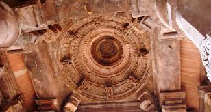

ABOUT

The temple originally stood on the banks of a reservoir 18.5 long and 7.5 miles wide.[7] This reservoir was formed through construction of 3 earth-and-stone dams during Bhoja's reign. The first dam, built on Betwa River, trapped the river waters in a depression surrounded by hills. A second dam was constructed in a gap between the hills, near present-day Mendua village. A third dam, located in present-day Bhopal, diverted more water from the smaller Kaliasot river into the Betwa dam reservoir. This man-made reservoir existed until 15th century, when Hoshang Shah emptied the lake by breaching two of the dams.